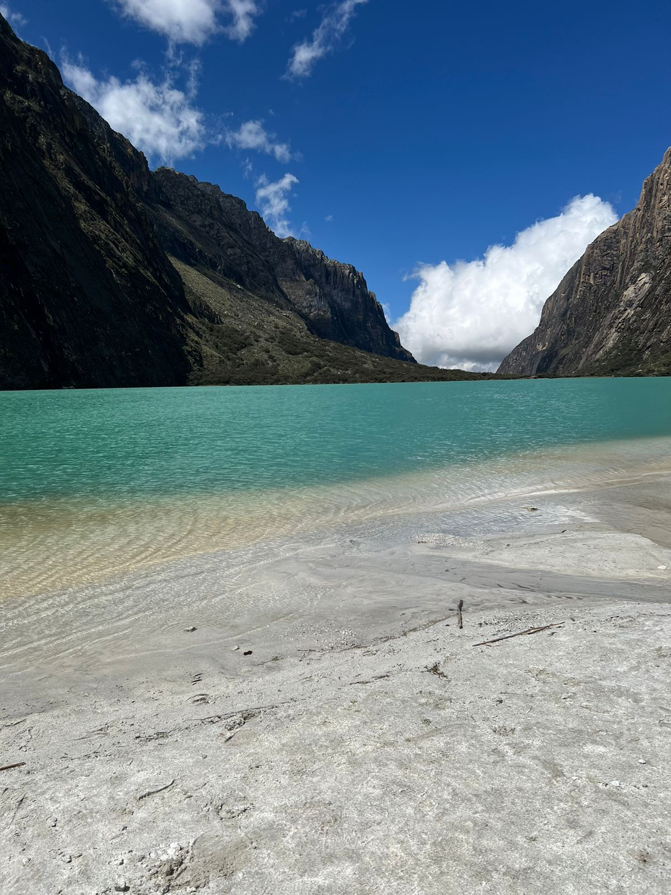
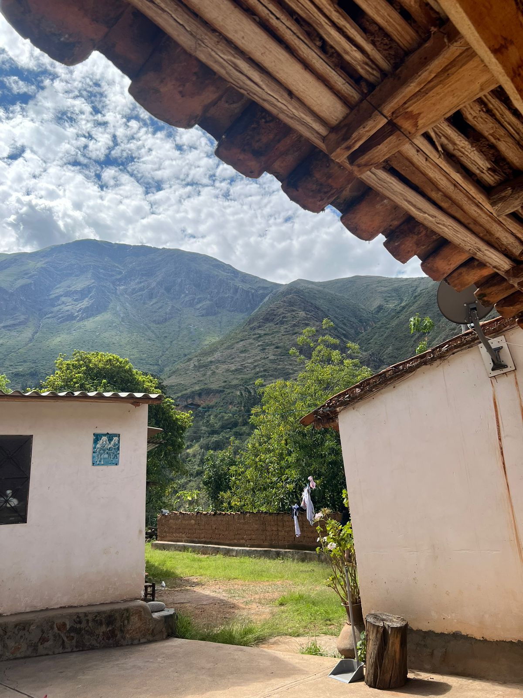
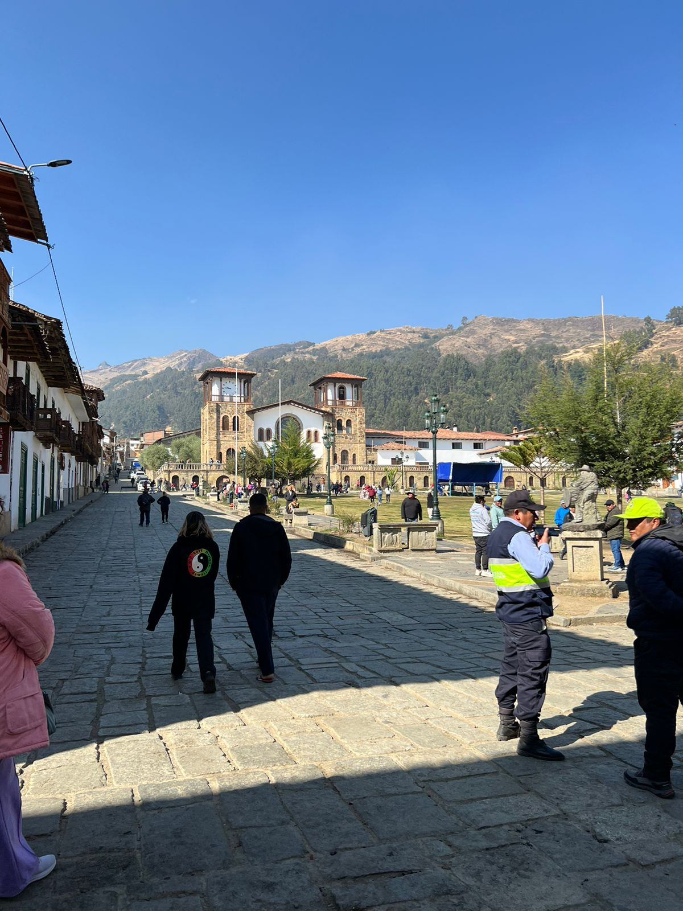

Laguna de Llanganuco
La quebrada de Llanganuco es un desfiladero de alta montaña,
de origen glaciar ubicado en la Cordillera Blanca, dentro del
parque nacional Huascarán en la provincia ancashina de Yungay
en el Perú.

Pavas
Pavas es un caserío del distrito Caraz, la zona está
llena de una rica tradición oral. Limita por el sur con el
distrito de Pueblo Libre y la provincia de Yungay; por el
norte con el distrito de Santa Cruz; por el este con la
Provincia de Pomabamba; v, por el oeste con los distritos
de Huata y Pamparomás.

Chacas
Chacas, es una ciudad peruana, capital del distrito homónimo
y de la provincia de Asunción, localizada en la parte central
de la denominada zona de Conchucos en el departamento de Áncash.